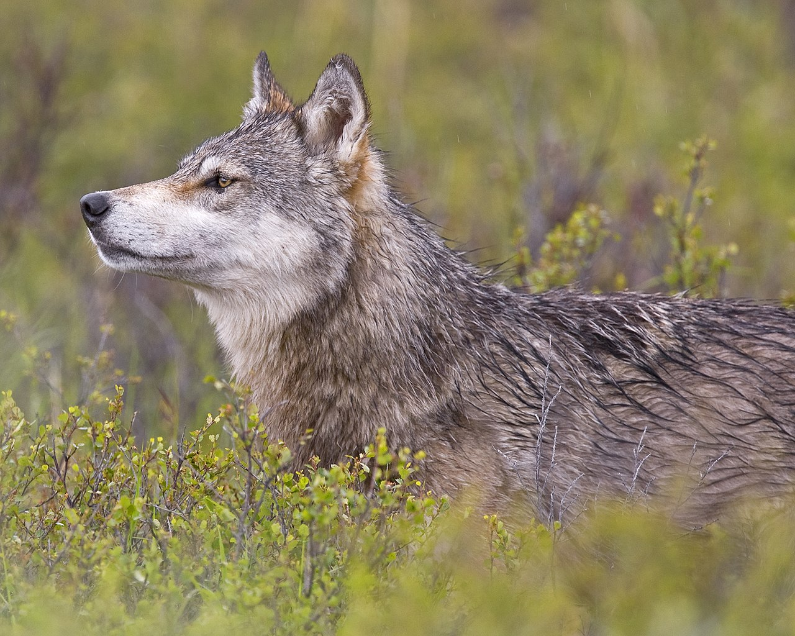

07 · Anatomy & Biology
Anatomy & biology of the gray wolf.
A biological overview of the world's most resilient predator — its physical evolution, its working systems, and its life cycle.
Size & measurements
Size varies by geography — northern wolves are generally larger — but these are the standard physical benchmarks for a healthy adult.

HEIGHT
26–33 in at shoulder
26–33 in at shoulder
LENGTH
4.5–6.5 ft nose to tail
4.5–6.5 ft nose to tail
FOR SCALE
5'10" human
5'10" human
| Height (shoulder) | 26–33 in (66–84 cm) |
|---|---|
| Total length (nose to tail) | 4.5–6.5 ft (1.4–2 m) |
| Weight (males) | 70–145 lb (32–66 kg) — ~20% larger than females |
| Weight (females) | 60–100 lb (27–45 kg) |
| Top speed | ~38 mph (61 km/h) in short bursts |
| Cruising speed | ~5 mph (8 km/h) — sustainable for hours |
Key physical adaptations
Wolves are cursorial predators — biologically designed to run and hunt over vast distances.
- The gait. Wolves walk and run on their toes (digitigrade), which increases effective leg length and top speed.
- "Snowshoe" paws. Their large paws — up to 5 inches long — spread apart to distribute weight on snow and soft terrain.
- Powerful bite. Their jaws can exert up to 1,500 psi — enough to crush a femur.
- Double-layered fur. A dense undercoat insulates; long guard hairs shed moisture and protect against the elements.
- 42 teeth, including four 2-inch canines built for grabbing and holding large prey.
- ~200 million olfactory receptors — roughly 100× a human's. Wolves can scent prey over a mile downwind.
Respiration & endurance
The respiratory system is the engine of the wolf — built for sustained aerobic activity.
- How they breathe. Wolves use a powerful diaphragm to pull air into high-capacity lungs. They primarily breathe through the nose to filter and warm incoming air.
- Cooling system. Because they don't have sweat glands across their body, wolves pant to regulate heat. Evaporation from the tongue and lungs prevents overheating during intense hunts.
- Heart efficiency. A wolf's heart is large relative to its body size, allowing rapid oxygen delivery to working muscles.
The life cycle
A wolf's lifespan depends heavily on its environment and its role within the pack.
| Environment | Average lifespan | Notable factors |
|---|---|---|
| Wild | 6–8 years | Territory disputes, injury, food scarcity |
| Captivity | 12–15 years | Guaranteed nutrition and veterinary care |
Did you know?
- Scent gland. Wolves have a specialized scent gland on the top of their tail, used for social marking.
- Night vision. A reflective layer behind the retina — the tapetum lucidum — gives them superior low-light vision.
Wild Lifespan
6–8yrs
Captive Lifespan
12–15yrs
Bite Force
~1,500psi
Scent Receptors
~200Mcells